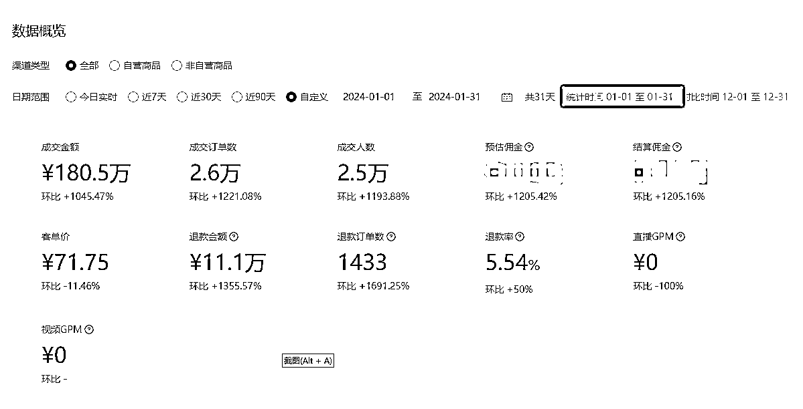
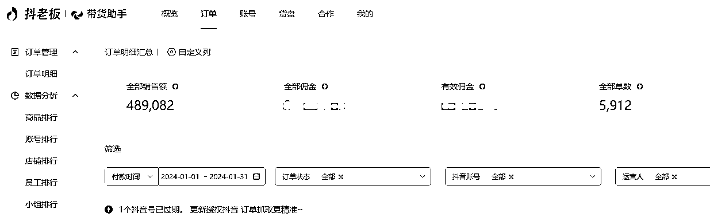
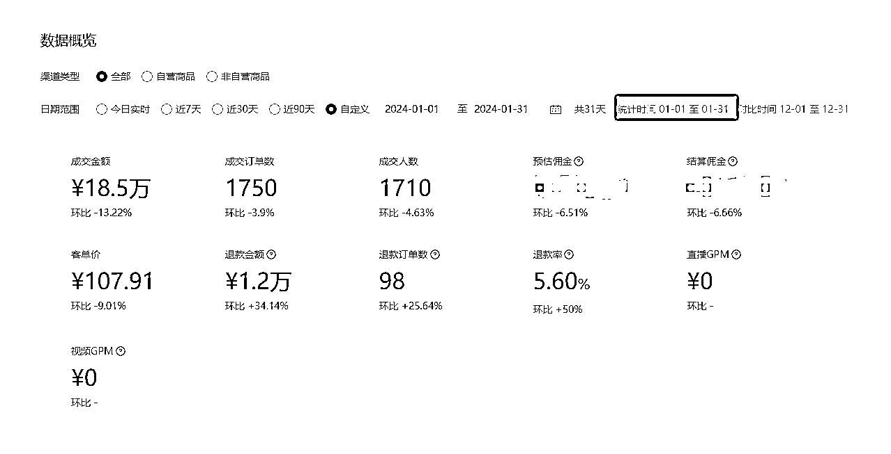
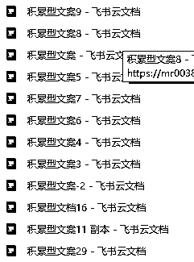
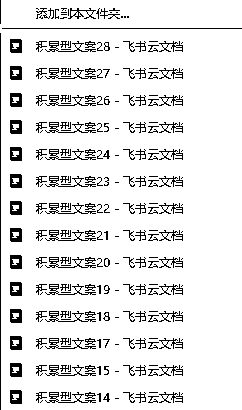
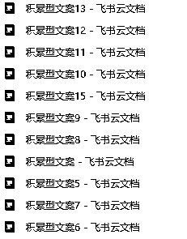
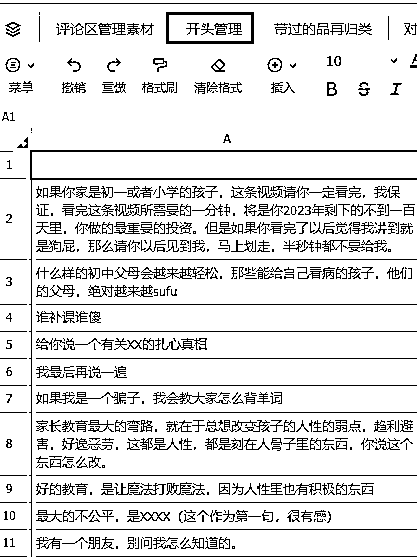
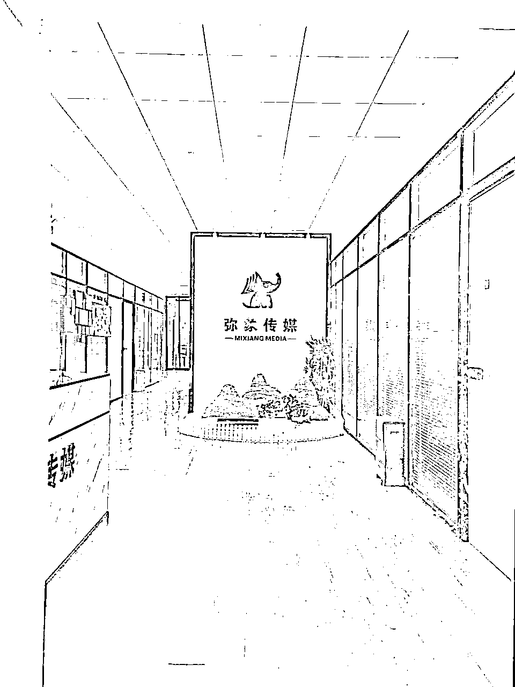
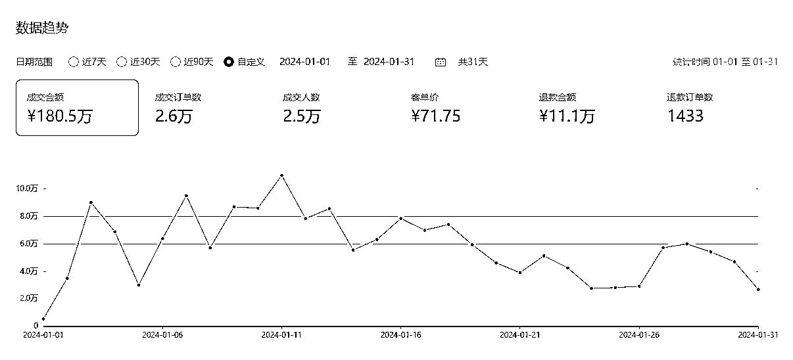

来源：https://bqwkrkc6dh.feishu.cn/docx/D81Sd4bNnoZzTAx9e11cvzJQnLc
大家好，我是Lip，大约是3月前，我在这里发布了一篇文章，叫做
“3个月拿到结果，新人入局抖音教辅资料带货经验分享”
刚刚过去的一个月，还是这个项目，我单月已经突破了GMV247万。



在不断内卷，新人不断入局的短视频带货赛道，过去几个月到底做了什么，能让我在GMV上有个跨越式的突破。
这篇文章，是我复盘总结过去3个月的行动，从项目低谷，到持续改进，流程梳理，扩大战果的憋尿级干货输出。全文6000多字，阅读8分钟左右。我相信，这对于那些想轻资产启动项目、一两人的团队，是很有参考价值的。
上篇文章介绍了，我大概是去年7月入局教辅带货。其实入局时机现在看，基本就是抖音红利刚刚褪去的时候。刚做没几天，7月抖音升级了对教育类视频的审核机制，这个升级说来也很狗血，就是在暑假一开始，一大堆博主为了卖书，就在视频的开头说：初一的暑假很可怕、初二的暑假很可怕、六年级的暑假很可怕，每一年的暑假都很可怕
一时之间，如果你是一个妈妈，无论你孩子几年级，你都会看到无数的视频都在告诉你：今年很可怕！你要学习啦。
抖音央视看不下去了，专门发视频点名这些博主，
然后从那以后，就不能说任何焦虑话题了。
“现在不学就晚了”“初二暑假就是分水岭”，
不能过度承诺，
“用了就能上90分”，
包涵但远远不限于以上的表达方式，全部被禁止，你的视频里，但凡透出一点点造焦虑或者保结果的表达，通通过不了审，也就拿不到很好的流量。
但是好在当时是教辅旺季--暑假，所以我也做了几个爆款视频。放到现在来说，当时的爆款几率还是很高的。
那就做呗，然后就沿着这个路径继续加码，持续做号。
结果到了9月，很多朋友和供应商都在说的，梦寐以求的开学季要来了，开学了，家长不得给孩子准备各种书啊。但是很可惜，这泼天的大流量，并没有来到我的头上。
而且，更大的问题在于，我的产量在不停的上涨，而收入却没啥变化，甚至在掉。对比7月，内容形式没太大变化，视频量已经从单天8条，增长到16条。工作量增加了一倍，但是gmv不增反降。一定是哪个环节出问题了！！！
这时候，就仿佛乘船出海却忘了带指南针。我每天拍摄，上传内容，但没有策略，没有方向。看着也挺忙，但是没结果。
再不做出改变，就今天工作不努力，明天努力找工作了。
做抖音是一个很痛苦的事情，特别是在你没有主线的情况下， 你会极度不坚定。这个不坚定，分为两个层面
最大层面的主线缺失，其实是不知道到底要做什么样的内容形式。当时我有三种不同的内容形式，混剪、演绎、口播。（具体什么是混剪，演绎的内容形式，可以看我上一篇帖子）
市面上三种内容形式都有，都有玩的很好的。我当时三种也都做，也都能出单。
现在来看，最怕的就是特么都能出单。因为你你无法取舍，你不知道向那个方向发力，要知道，这三个发力方向所对应的业务流程，以及扩张逻辑，是完全不一样的。
你感觉出来没有，上面三个事情的基本业务流程，完全不一样，不一样就很难标准化、流程化、规模化，就不能复制，就只能今天蹦两单明天蹦两单的过活。
不过，这个问题看似想明白了，但在具体的落地时，手心手背都是肉，万一我选错了呢？万一混剪有谁爆单了呢？按照我当时的情况，一个品，混剪也带，口播也带，演绎也带。混剪出个2单，演绎出个3单，那下一步，你是加大演绎的量？还是混剪的量？根本没法定，就特别消耗。
一点不夸张的说，当时真是吃饭睡觉都在考虑到底走哪条路。
除了大层面的主线缺失，另一个痛苦，就是在具体微操层面的主线缺失。这种缺失吧，甚至比上一种缺失更让人捉急，因为，在每一个刷视频的当下，你都有可能会被一条视频所干扰。
比如，这个过程当中，你会不断去刷同行的视频，你会看到
A博主找个小孩，面无表情的说话，还能有这么大的流量，要不我也试试？
B做了动作，我待会拍视频的，也要做一下？
C穿了个衣服，我赶紧去淘宝下单买一件，也许这就是流量神器？
D开头是动画动态视频，比较吸睛，我也要跟一下？
所以跟着这些细节，我也做了一堆所谓的改进：
但是但是但是！！通通都没有用！销量依旧很差。
大层面和小层面的问题连续在我脑袋里打架了快一个月，数据也越来越差，自己心气也不高，又到了国庆，干脆放假休息休息，我也好好休息调整一下状态，也许，能找到破局点。
因为我原来做过挺长时间的大客户销售的，这个工作让我养成了一个好习惯：有事没事找人聊聊。这个习惯帮着我拿下了众多大客户，谁谁谁才是真正拍板的、谁和谁又不对付、这些鸡零狗碎的信息，能够帮助我快速摸清楚目标客户里，到底谁在支持我，谁又在反对我，我才知道在哪下劲。
这些信息，虽然零敲碎打，但往往一句话说到点上了，就能一语点醒梦中人。
点醒的这一下，在十一期间，发生了。
十一那两天，和一个原来行业的老板吃饭喝酒，老板比我长几岁，生意也很成功，我就和他交流我的困惑。老板其实很难搞懂我在说什么，但是马上把问题抽象到我有个选择要选，而且是决定未来业务走向的。
他就和我说了一句：
要是我，我就选一个我自己把控能力更强一些的路。毕竟刚开始做。
对，就要把控能力强！
我一个刚起步的创业者，最能依赖的就是自己啊，任何特别强调团队的事情，其实都是不确定性。一个员工的离职，一个拍摄人员的调整，对我来讲，都是波动。
所以，哪个把控力最强？
当时有个暑期在我这帮忙的大学生弟弟，拍他演绎的素材已经用完了，大学生回学校了，素材供应不稳定，咔掉。
至于混剪，虽然内容形式当时做的也不错，是出单相对多的内容。但是这玩意还是要依赖团队才能剪出来。而且观察了很久我的剪辑同学，我发现这里面有太多细碎的东西才是决定结果好坏的关键，这就意味着，我需要把这些东西做成流程和SOP，才能复制，还是太靠团队，咔掉。
坚定的做口播
把大部分的不确定性，集中我自己身上。未来所有的业绩问题，就只能是我自己的问题。这就是我那个老板朋友说的，把控力。
从另一层面来说，选了口播，不确定性少一些，排查问题的时候，找自己的原因就行了。
在十一定了走口播这条路之后。十一过后，开始优化流程，让团队合作更高效。
1.主播写文案，录视频，这样口播内容的好坏，90%都是主播决定了。
2.剪辑拍摄产品视频，剪辑完整口播视频，再发布
因为少了内容形式，我每天专注口播文案创作就行了，不用操心混剪爆款脚本收集，整理。
每天4个小时写口播文案，3小时拍摄，剩下的时间刷同行朋友视频，找灵感，创新文案和场景。到了月底，在不断打磨脚本框架，不断研究场景+文案的情况下，抖音终于有了单天过千单的视频。
而且，很明显，我爆单的概率上来了，更重要的是，我好像在出片效率上，也比别人高很多。
我自己回忆了一下，这是为什么？我觉得核心就是：有策略的抄作业。
做抖音需要抄，这个都知道，但是为啥人和人抄出来，结果有那么大的差异。我觉得，就是没策略。我相信大家稍微抄过抖音爆文，大概都会经历下面这个过程
特别是对于我们这种一两个人的小团队，这种反馈根本无法支持我们往下走。
而且，这么抄有个问题：你完全没有积累！
要知道，一条视频爆了，影响要素太多了。可能是开头，可能是产品，可能是自己的某个动作，可能是起始流量好，导致一开始出单就不错，就导致系统不停推荐类似的人群。。这么多要素里，我们能抄的太少了，哪怕是1比1的抄，也只能模仿文案。连画面都模仿不了。毕竟有的人，看着就像那么回事，出单就是好。
所以，抄一条视频，大概率是爆不了的。
我做过统计，我最开始的时候，是二百条视频爆一条。但是，没爆就说明这200条拍的毫无价值么？这些视频里，第一条视频里，难道没有任何一个点，可以用在后面的199条视频里么？第二条、第三条、第五十条、第一百条、第二百条，里面但凡有一个点，我记住了，我用在后面的视频里。那我的能力就在不断增长。
说句不好听的，这200条没爆又如何？我会做内容了！
于是，我看了大量的视频，拆了他们大量的结构。



还总结了大量视频的爆款开头，这让我在写一条文案的时候，我的数据库里有无数的爆款开头，且已经被抖音的算法验证过

我还总结了别人在解决一个学习问题时，核心用的什么样的产品策略以及打法。这就让我在用户的需求以及“应该用什么产品”来满足用户的需求时，有更大的选择空间
因为这些流程、策略、框架，我的爆款概率，从之前的200条出一单流量还过得去的视频，到现在的20条，必出爆款。
我当时专门收集总结的文案，形成库，然后对除了书的卖点以外的内容，进行拆解和分类。慢慢过了模仿的阶段，从爆款文案里不断提炼出规律，然后总结了自已的一套脚本框架。
举个例子：
你觉得某条视频讲的不错，先做拆解，一句一句，把文案拆解了，然后分类收集。
写新品文案的时候，按照下列表格，直接去拼装文案，会让效率翻倍
| 语不惊人死不休 | 描述问题 | 切入点 | 提高效率 | 书里细节 | 看不懂咋办 | 介绍全套 | |
|---|---|---|---|---|---|---|---|
| 语文 | |||||||
| 英语 |
这样的好处是，
1.自己写文案比单纯模仿文案，更有思路，也更快
2.对一个品短时间能出若干条文案。
3.算法决定了，爆了还会爆，视频的爆率其实是增加的。
在有了一些成果之后，马上开始加码，同样的路径持续输出。场景+脚本框架都不变，后续结果也还不错。在持续有订单的时候，我开始思考下一个阶段的问题，怎么把现在这种势头保持住。
我觉得答案应该在供应商那里。
为什么会有这样的结论：
可能有朋友会说，任何信息，供应商的商务都会给我说的，怎么可能？
我那天去一本（一个供应商），跟他们的商务聊天，你知道人家一个商务小姐姐对接多少个达人么？
1000个！
咱就扪心自问，咱这张脸也不好看，咱又是个已婚老爷们，也没法献身，人家凭啥把一些关键信息给你？
我们作为普通的达人，想要在人家心里稍微有点点位置，只有两个事情
现在很多时候，和供应商交流都是通过微信，大家好像都比较习惯了这种不见面的沟通。但作为了一个曾经的大客户销售，我一直觉得，见面真的很有价值，给你讲一个一直以来，我用来激励自己，让自己多去跑客户的爱情故事：
我有一个朋友，贼胖，当年找媳妇就特别难。他和他老婆是在相亲网站认识的。他媳妇当年白纸黑字写的择偶要求是：不能胖。但是我那个朋友特别自信的说，那又怎么样？只要两个人见了面，一个活生生的人见到了另一个活生生的人，那些想象中的抽象条件，马上就瓦解冰消。活人见面，拼的是那种看不见摸不着的个人魅力，是小动物看小绿豆的缘分。
你看，这就是见面的价值。
可是，现在别说见面沟通了，电话都很少沟通。你坐在办公室里，在微信前，你只能拿到，供应商转给你的爆款视频，爆款文案，估计达人人手一份。怎么脱颖而出？怎么持续爆量？
就得做不同。
那怎么做不同，就是拿一手的信息。供应商就有我要的信息。
后来，我陆续拜访了，一些合作比较好的供应商。确实也收获到了意想不到的信息。
还是那句话，用自己擅长的方式去赢！

在交流拜访之后，这个时候，其实我还没有意识到，有个更大机会正在向我靠近。我发现在视频号里，我的数据增长的特别快，慢慢我就把内容形式和发布数量，往视频号里倾斜了。视频号的政策更加鼓励真人口播，让我拿到了更好的流量，马上就超越了抖音。
事后看，其实也很容易理解，就是风口来了+一定积累+该有的执行力。
当时我就意识到，前两个要素已经有了，就差把命搭进去的执行力了。于是，在我能做到的事情上，我应该付出了我不会遗憾的努力：
文案：每天3个小时写20-25条文案，能写20条，就坚决不写19条。
拍摄：每天5-6个小时的拍摄，某一个景好像特别出单，那就连续在那拍，直到把红利吃干；某一个品好像特别应季，那就同一条文案，换20种不同的花样说出来。（相信我，这事不容易，你会想吐的）
商务：无论多晚，每天都要跟商务聊聊，大盘咋样，哪个达人的视频爆了，为啥爆了，我能不能学，经常是一聊就聊到夜里两三点。然后第二天六点爬起来，接着写文案。
每个环节都落地标准动作，团队加我就2个人，年前那段时间没有多余想法，就是执行，往死里执行。

年前流量确实好，我也算接住了这泼天的富贵。单月做到了245w＋的总销量。距离我上次复盘的时候过去了4个月，比上次三月45w，前面多了一个200w。
我愿意把这些结果，归因下面三点。
无论是好的执行，还是没有结果的执行，都是执行。我见过很多朋友，明明执行下去，反馈会慢一点，但是倒在了黎明的前夜。在执行过程中，不断调整动作，但不要掉头。只要方向没问题，执行就有好的结果。
尤其是互联网项目，大部分人都是看到有人赚了钱了，才开始行动。如果还没结果，其实原因还是自己没有执行到位。
我自己很喜欢的，硅谷的王川老师，有过一篇文章，讲数量和质量的关系。他观点很简单，质量问题其实就是数量问题。我坚信这一点。
做的过程当中，也有人不断问我怎么提高视频质量，对此，我总是有2个感觉：
想要解决这2个问题，没别的，只能怼执行力。
短视频，是一个很考验创新能力的赛道。一年前，一个好视频，能持续拿一个月的流量，现在这个阶段，好视频，能持续跑3天，就非常不错了。这就对短视频从业者提出更高的要求。不断的创新，微创新。注意，是微创新，不要奢求自己能做出多大的一个创新，我一天拍10条视频，每天有一个小创新，哪怕就是“在厨房拍摄更容易出单”这么一个小创新，半年积累下来，也能收获大结果。
沉住气，当前经济环境很不好，很多朋友（真的是很多，包括我也是跨行而来）都参与到带货行业中，导致竞争压力很大。短视频是个赢家通吃的环境，也是个以小博大的博弈场。
沉下心，不断请教高手，不断打磨自己的内容，持续精进，不断收获小成功。正反馈很重要，是不断激励你前进的重要保障。
没有过日出千单的经历，很难体会到简单的动作，其实是可以带来很大的结果。最后的赢家，不一定能力有多强，但肯定都是沉住气、能坚持的主。
以上，是我的短视频带货项目的总结。
写在最后：
一直泡在生财的环境里，除了能看到很多项目之外，对我一个比较大的体会就是，我能在生财找到同频的人。还是我说过的那句话，“抖音对大部分人来说，和生活是一样的，都需要不断去磨，在没有反馈的黑盒里摸爬滚打”
和同频人一起交流，是让我快速走出黑盒的有效方法。
希望你也是。